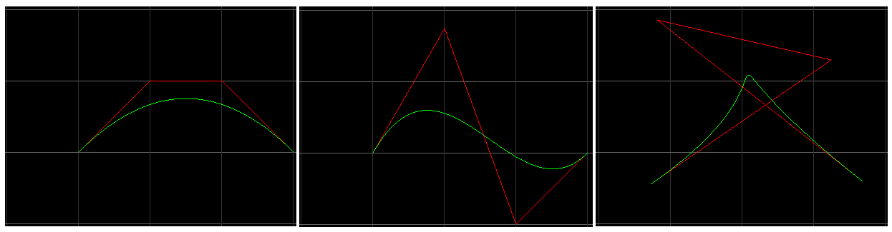

2d bezier curve - simple implementation
工作中又一次遇到nurb curve的问题，具体是knots个数和求法的问题。那东西太难，相对来来说，bezier curve易懂很多，一直想实现一下来看看，于是就有了此。
这次的内容是: + bezier curve, 2d, degree 3 (which means cubic, order = 4, 4 control points); + 用polyline把那4个控制点的连线画出来. + 用polyline把curve画出来。实际上只是curve的一个approximation. 例如对这个curve用200个小线段来表示, 就得sample 201个点. 这就需要evaluation，给出一个t [0, 1], 求对应curve上的坐标position (x, y). 我这里用的是de Casteljau方法来做evaluation. + 用key 0/1/2/3 to selete the corresponding control point，用Up/Down/Left/Right来move the control points, update the curve realtime.
除去windows/event managent的辅助代码以外，最有意思是怎么实现de Casteljau:
Vector2d evaluateCubicBezier_deCasteljau(const std::vector
if (!aCPs.size())
{
assert(false);
return Vector2d();
}
if (aCPs.size() == 1)
return aCPs[0];
std::vector<Vector2d> a;
for (int i = 0; i < aCPs.size() - 1; ++i)
a.push_back( aCPs[i] + (aCPs[i+1] - aCPs[i]) * t );
assert(a.size() == aCPs.size() - 1);
return evaluateCubicBezier_deCasteljau(a, t);
}
下面是一些有趣的结果: 
Source code: https://github.com/renc/PhoenixCore/blob/master/examples/08curves2dmain.cpp